1 机器人底盘控制器
1.1系统简介
本项目基于RT-Thread实时操作系统开发了一款机器人底盘控制器系统。系统通过USART接口接收遥控器信号实现手动控制，同时采用基于CANOpen协议的CAN总线与电机控制器通信，实现对驱动电机的精准控制。系统还预留了RS-232接口与ROS上位机通信的能力，为未来扩展提供了可能。整体架构充分利用RT-Thread的实时多任务特性，通过优先级调度确保控制指令的实时响应，为机器人底盘提供了可靠的控制方案。
1.2系统功能架构
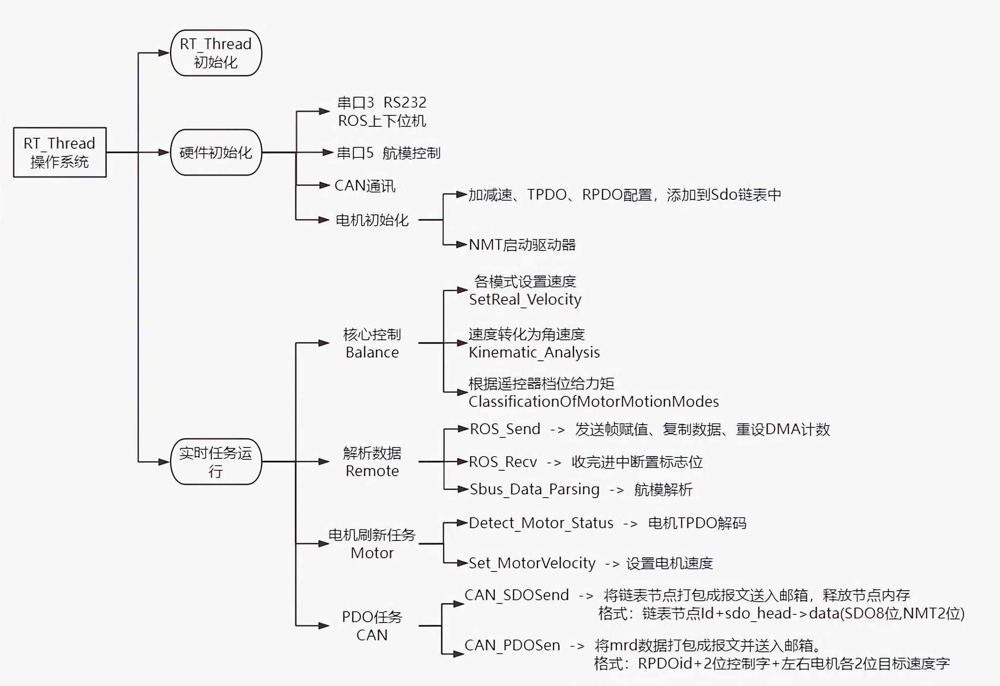
2 硬件资源
2.1 IC选型
MCU: 本系统控制器使用的是自主研发的嵌入式主控单元，采用高性能国产芯片为核心，具有高实时性和强扩展性的特点，可广泛应用于工业控制、机器人、智能装备等领域。
主控芯片：N32G455VEL7（国民技术）
主频168MHz
内置512KB Flash和144KB SRAM
工作电压：5V DC（内置电源转换）
- 主要通信接口：
- 串口 ×7（部分支持RS232/RS485）
- CAN总线 ×2（支持CAN 2.0A/B）
- RS485 ×2（隔离型）
- RS232 ×2（标准DB9接口）
2.2 PCB板实况区域图
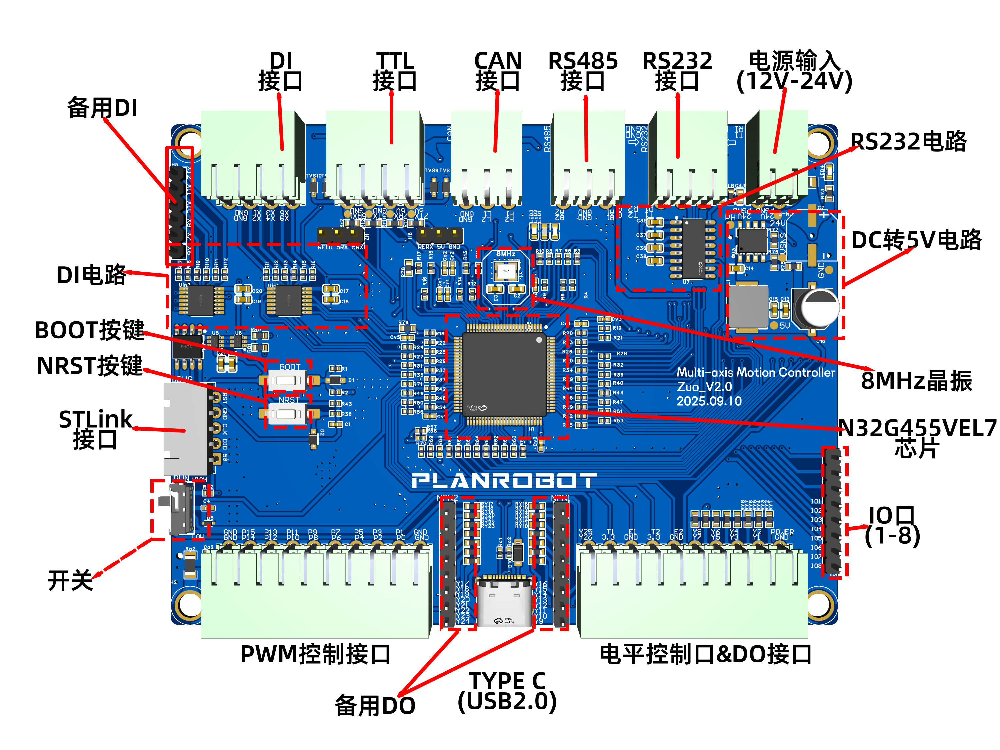
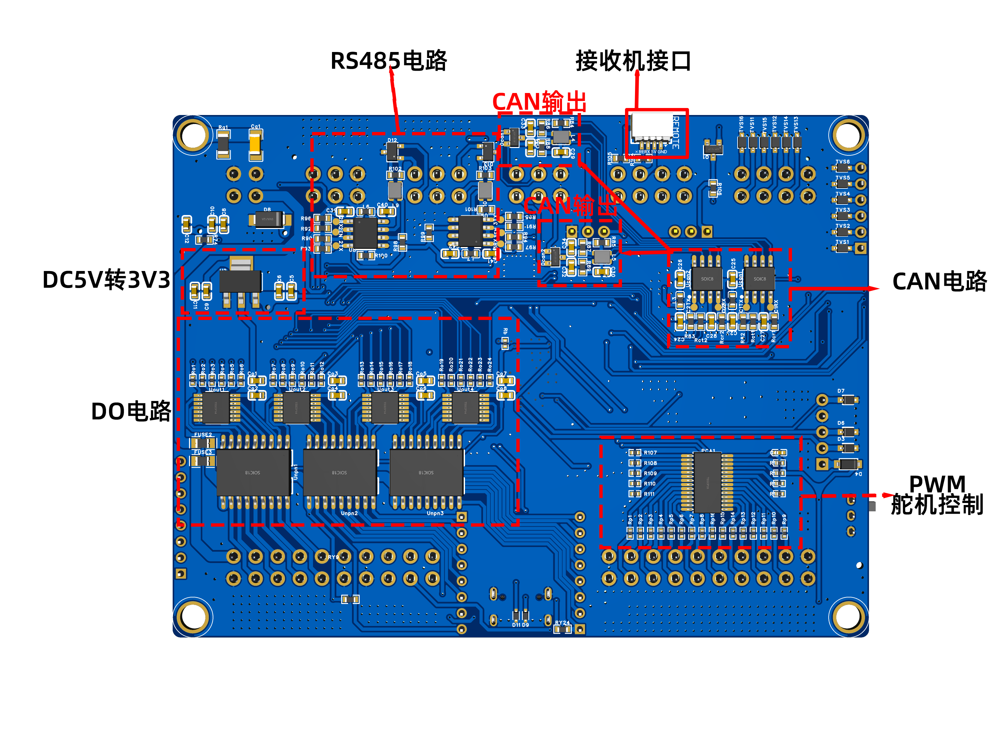
2.3 底盘控制外设
时代超群伺服电机、HT-8A航模遥控器、TPS5430DDAR降压模块（24V转5V）、急停物理按键。
框架图：
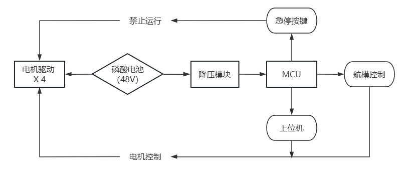
2.4 外设清单
淘宝购买对应的外设设备

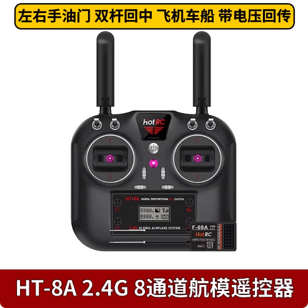
3 基础准备
3.1 开发资源
| 组件 | 版本要求 | 获取方式 | 备注 |
|---|---|---|---|
| Keil MDK (μVision5) | 5.38+ |
Keil官网 | 需注册Nationstech设备支持 |
| N32G4xx_DFP | 2.1.0+ |
国民技术官网 | 芯片支持包 |
| 开发库 | - | N32G45x标准库 | 标准库 (N32 Standard Peripheral Library) |
| RT-Thread | 3.1.5+ |
RT-Thread官网 | 下载源代码（推荐百度网盘下载） |
| ST-Link V2驱动 | V2.38.26+ |
ST中文官网 | 下载STSW_LINK009 |
本项目代码可以从PlanRobotShenZhen/Chassis_robot:https://github.com/PlanRobotShenZhen/Chassis_robot 中下载获取。
3.2 软件安装与代码移植
安装Keil MDK核心包：可参考下方CSDN博主的安装教程。
keil5——安装教程附资源包:
https://blog.csdn.net/weixin_48100941/article/details/126192218?安装Nationstech设备支持包：
- 打开下载的资源包，找到并双击
N32G4xx_DFP.x.x.x.pack自动安装，如下图所示。
- 打开下载的资源包，找到并双击
安装ST-Link驱动：可参考下方CSDN博主的安装教程。
stlink驱动教程:
https://blog.csdn.net/m0_68987050/article/details/146936297?开发库移植步骤过程
打开文件夹找到以下文件并复制。
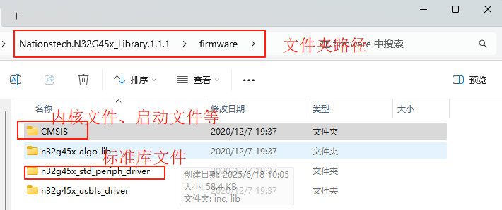
打开项目工程，新建一个
firmware文件夹，把文件复制到此文件夹中。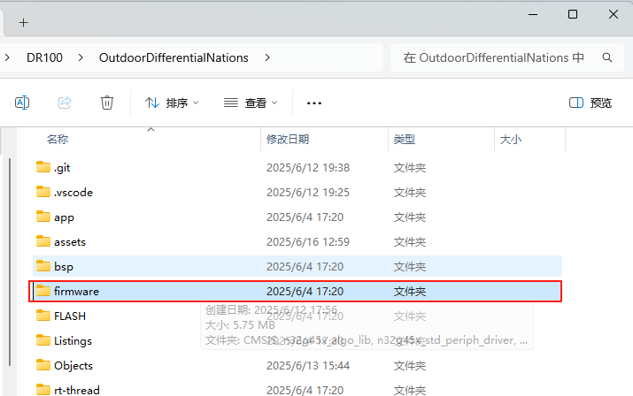
3.3 RT-Thread源代码移植
本工程的RT-Thread文件已经集成在工程中，如果使用其他芯片作为主控芯片,可以参照官方教程进行文件修改和移植。
官方文档 STM32系列BSP制作教程：https://github.com/RT-Thread/rt-thread/blob/master/bsp/stm32/docs/STM32系列BSP制作教程.md
4 理论基础
4.1 RS-232协议
RS-232 是一种经典的串行通信标准，由美国电子工业协会（EIA）于1962年制定，正式名称为 EIA-232。它定义了数据终端设备与数据通信设备之间的物理接口和通信协议，广泛应用于早期的计算机、工业设备、仪器仪表等领域。
4.1.1 电气特性
RS-232 采用 非平衡传输，电平与TTL/CMOS逻辑不同：
| 逻辑状态 | 电压范围 | 说明 |
|---|---|---|
| 逻辑 1 (MARK) | -3V ~ -15V | 表示空闲或停止位 |
| 逻辑 0 (SPACE) | +3V ~ +15V | 表示数据位或起始 |
特点：
- 抗干扰能力较弱。
- 通信距离：通常 ≤ 15 米。
- 通信速率：常见 9600 bps ~ 115200 bps。
- 需电平转换：现代设备通常使用 TTL（0V~5V 或 0V~3.3V），需 MAX232、SP3232 等芯片转换电平。
4.1.2 物理层特性
RS-232 使用 DB9（9针）或 DB25（25针）连接器，常见的是 DB9，其引脚定义如下图。
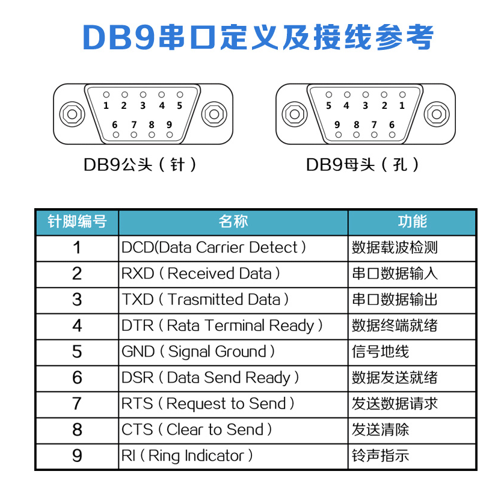
物理连接：
- 最小连接（3线制）：仅需 TXD、RXD、GND（无流控）。
- 全双工（带流控）：增加 RTS/CTS 或 DTR/DSR 进行硬件流控。
4.1.3 数据帧格式
RS-232 采用 异步串行通信，数据以 帧（Frame） 为单位传输：
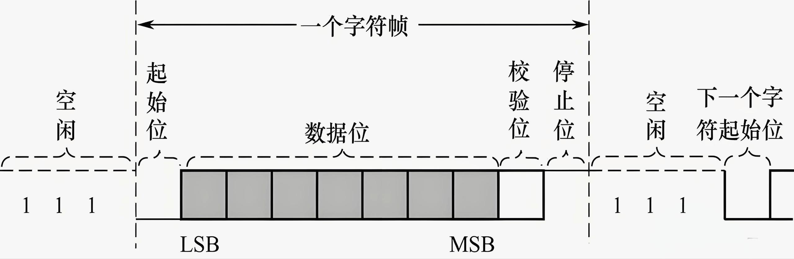
帧结构：
| 字段 | 位数 | 电平（RS-232） | 常见配置 |
|---|---|---|---|
| 起始位 | 1 位 | 逻辑 0（+3V ~ +15V） | 必选，固定 1 位 |
| 数据位 | 5~8 位 | 逻辑 0 或 1 | 最常用 8 位（1 字节） |
| 校验位 | 0 或 1 位 | 逻辑 0 或 1 | 可选，常见配置： - 无校验（None） - 偶校验（Even） |
| 停止位 | 1 或 2 位 | 逻辑 1（-3V ~ -15V） | 常用 1 位 |
4.1.4 RS232总结：
总的来说，RS232就是使用串口发送接收的媒介，底层还是串口的协议。要使用RS232的时要使用电平的转换芯片，而在转换芯片中（ MAX232、SP3232）能自行将电平转换为RS232的逻辑电平1或者0。
4.2 CANopen协议理论基础
4.2.1 CANopen简介
CANopen 是一种建立在 CAN (Controller Area Network) 总线技术之上的、高层通信协议和设备配置文件标准。它诞生于 20 世纪 90 年代初，由 CiA (CAN in Automation) 协会开发和维护，旨在解决原始 CAN 总线（主要定义物理层和数据链路层）缺乏标准化应用层通信机制的问题。
简言之，CAN是物理层和数据链路层，CANOpen是调用CAN进行通行的应用层。
CANopen协议栈采用分层结构，与OSI模型对应关系如下：
| OSI层 | CANopen实现 |
|---|---|
| 应用层 | 对象字典、应用协议、设备规范 |
| 表示层 | 对象字典数据类型 |
| 会话层 | SDO协议 |
| 传输层 | PDO协议 |
| 网络层 | 标识符分配、网络管理 |
| 数据链路层 | CAN总线协议 |
| 物理层 | CAN物理层 |
CAN总线入门教程can总线教程：https://www.bilibili.com/cheese/play/ss7014
CANOpen入门推荐 周立功教程: https://www.zlg.cn/data/upload/software/Can/CANopen_easy_begin.pdf
4.2.2 CAN总线物理层
CAN总线采用差分信号传输，使用两根线（CAN_H和CAN_L）：
| 逻辑状态 | 电平表现 | CAN_H 电压 | CAN_L 电压 | 差分电压 (CAN_H - CAN_L) |
|---|---|---|---|---|
| 显性 (0) | 逻辑低电平（主导状态） | ≈3.5V | ≈1.5V | ≈2V |
| 隐性 (1) | 逻辑高电平（被动状态） | ≈2.5V | ≈2.5V | ≈0V |
4.2.3 CAN帧结构
标准CAN数据帧包含以下字段：
帧起始位(SOF)：1位显性位，表示帧的开始
仲裁段：
| 帧类型 | 标识符长度 | 组成 | RTR位 (数据帧/远程帧) |
|---|---|---|---|
| 标准帧 | 11位 | 11位基本ID | 显性 (0) / 隐性 (1) |
| 扩展帧 | 29位 | 11位基本ID + 18位扩展ID | 显性 (0) / 隐性 (1) |
- 控制段：
| 字段 | 位数 | 描述 | 取值 |
|---|---|---|---|
| IDE | 1位 | 标识符扩展位，区分标准帧和扩展帧 | - 显性 (0)：标准帧（11位 ID） - 隐性 (1)：扩展帧（29位 ID） |
| RTR | 1位 | 远程传输请求位，区分数据帧和远程帧 | - 显性 (0)：数据帧 - 隐性 (1)：远程帧（无数据字段） |
| R0 | 1位 | 保留位（在标准帧中作为保留位，在扩展帧中可能用于未来扩展） | - 通常设为 显性 (0) |
| DLC[3:0] | 4位 | 数据长度码，指定数据字段的字节数（0~8字节） | - 0000 ~ 1000（0~8字节） - 超过 8 的值会被截断为 8 |
数据段：0-8字节数据
CRC段：15位CRC校验码 + 1位界定符
ACK段：1位应答槽 + 1位界定符
帧结束(EOF)：7位隐性位

4.3 CANopen通信
4.3.1 通讯对象
1. COB-ID结构
CANopen使用11位标识符(标准CAN帧)，COB-ID由两部分组成：
- 功能码(4位)：定义消息类型
- 节点ID(7位)：标识发送或接收节点
常见功能码：
| 功能类型 | COB-ID (发送方) | 功能类型 | COB-ID (接收方) |
|---|---|---|---|
| NMT | 0x000 | NMT错误控制 | 0x700 + NodeID |
| SYNC | 0x080 | RSDO | 0x600 + NodeID |
| EMCY | 0x080 + NodeID | TSDO | 0x580 + NodeID |
| TPDO1 | 0x180 + NodeID | RPDO1 | 0x400 + NodeID |
| TPDO2 | 0x200 + NodeID | RPDO2 | 0x480 + NodeID |
| TPDO3 | 0x280 + NodeID | RPDO3 | 0x500 + NodeID |
| TPDO4 | 0x300 + NodeID | RPDO4 | 0x580 + NodeID |
2. CANopen4种主要的通信对象：
| 通信对象 | 缩写 | 用途 | 传输方式 |
|---|---|---|---|
| 网络管理对象 (Network Management) | NMT | 节点状态管理（启动/停止/复位）、网络控制（心跳、节点保护） | 主从式（主机→从机广播/单播） |
| 服务数据对象 (Service Data Object) | SDO | 参数配置、固件升级、非实时数据传输（访问对象字典） | 点对点（客户端/服务器模型） |
| 过程数据对象 (Process Data Object) | PDO | 实时数据交换（传感器数据、控制命令等） | 生产者/消费者模型（广播/单播） |
| 特殊功能对象 | — | 同步、时间戳、紧急事件等 | 事件触发或周期广播 |
4.3.2 对象字典
对象字典（Object Dictionary, OD）是 CANopen 设备的核心数据结构，用于存储设备的所有配置参数、通信设置和实时数据。
1. 对象字典结构
对象字典采用16位索引和8位子索引的寻址方式：
- 索引(Index)：16位，范围0x0000-0xFFFF
- 子索引(Sub-index)：8位，范围0x00-0xFF
2. 对象字典区域划分
| 地址范围 | 描述 |
|---|---|
| 0x0000-0x0FFF | 数据类型定义 |
| 0x1000-0x1FFF | 通信对象区 |
| 0x2000-0x5FFF | 制造商定义对象区 |
| 0x6000-0x9FFF | 标准化设备子协议对象区 |
3. 常见对象字典条目示例
| 索引范围 | 功能描述 | 典型对象示例 |
|---|---|---|
| 0x1000~0x1029 | 设备标识与状态管理 | 0x1000（设备类型）0x1001（错误寄存器） |
| 0x1400~0x15FF | RPDO通信参数（接收PDO配置） | 0x1400（RPDO1 COB-ID）0x1401（RPDO1传输类型） |
| 0x1600~0x17FF | RPDO映射参数 | 0x1600（RPDO1映射对象数）0x1601（RPDO1映射的第1个对象） |
| 0x1800~0x19FF | TPDO通信参数（发送PDO配置） | 0x1800（TPDO1 COB-ID）0x1801（TPDO1传输类型） |
| 0x1A00~0x1BFF | TPDO映射参数 | 0x1A00（TPDO1映射对象数） 0x1A01（TPDO1映射的第1个对象） |
4.3.3 NMT协议
NMT协议用于控制网络节点的状态，主要命令包括：
| NMT 命令 | 命令值 (Hex) | 功能描述 |
|---|---|---|
| 启动远程节点 | 0x01 |
使节点进入 操作状态（Operational），可正常收发 PDO/SDO 数据。 |
| 停止远程节点 | 0x02 |
使节点进入 停止状态（Stopped），仅响应 NMT 命令，不参与通信。 |
| 进入预操作状态 | 0x80 |
使节点进入 预操作状态（Pre-Operational），仅允许 SDO 配置，禁止 PDO。 |
| 复位节点 | 0x81 |
软件复位节点，重新初始化应用程序（等效于重启）。 |
| 复位通信 | 0x82 |
复位通信参数（如对象字典通信配置），恢复默认通信状态，不重启应用程序。 |
4.4 CANopen设备配置
4.4.1 SDO通信
SDO帧为8字节固定长度，格式如下：
| 字节 | 字段名 | 描述 |
|---|---|---|
| 0 | 命令字 | 指定操作类型（读/写/分段控制）和数据长度 |
| 1-2 | 索引 | 对象字典的16位索引（小端格式） |
| 3 | 子索引 | 对象字典的8位子索引 |
| 4-7 | 数据 | 传输的数据（若为分段传输，此处为分段控制信息） |
示例1：读取设备类型（索引0x1000）
步骤：主站读取从站（NodeID=1）的设备类型（0x1000:00）。
| 步骤 | 字段 | 值/说明 | 备注 |
|---|---|---|---|
| 主站发送读请求 | CAN-ID | 0x601 |
COB-ID = 0x600（SDO请求） + NodeID=1 |
| 数据帧格式 | [0x40, 0x00, 0x10, 0x00, 0x00, 0x00, 0x00, 0x00] |
小端序（低字节在前） | |
| 从站响应 | CAN-ID | 0x581 |
COB-ID = 0x580（SDO响应） + NodeID=1 |
| 数据帧格式 | [0x43, 0x00, 0x10, 0x00, 0x42, 0x00, 0x00, 0x00] |
返回32位数据（小端序） |
命令字
0x40：读请求（4表示读取，0表示加速传输）命令字
0x43：读响应（4表示读取，3表示数据为4字节）
示例2：写入TPDO1通信参数（索引0x1800）
步骤：主站配置从站（NodeID=2）的TPDO1 COB-ID为0x182。
| 步骤 | 字段 | 值/说明 | 备注 |
|---|---|---|---|
| 主站发送读请求 | CAN-ID | 0x602 |
COB-ID = 0x600（SDO请求） + NodeID=2 |
| 数据帧格式 | [0x2B, 0x00, 0x18, 0x00, 0x82, 0x01, 0x00, 0x00] |
小端序（低字节在前） | |
| 从站响应 | CAN-ID | 0x582 |
COB-ID = 0x580（SDO响应） + `NodeID=2 |
| 数据帧格式 | [0x60, 0x00, 0x18, 0x00, 0x00, 0x00, 0x00, 0x00] |
返回32位数据（小端序） |
命令字
0x2B：写2字节数据（2表示写入，B表示2字节）命令字
0x60：写成功响应
4.4.2 PDO配置
| 步骤 | 操作 | 说明 |
|---|---|---|
| 1. 禁用 PDO | 设置 PDO 通信参数中的 COB-ID 最高位（0x80000000） | 禁用后，该 PDO 停止收发数据 |
| 2. 配置映射 | 定义 PDO 中包含的 对象字典条目（数据内容） | 每个条目格式：[索引(2B)+子索引(1B)+位长(1B)]（例如：0x6040:00 0x10） |
| 3. 设置传输类型 | 选择 PDO 触发方式： - 同步（SYNC 触发） - 异步（事件/定时触发） | - 0x00~0xF0：同步帧号 - 0xFE：事件驱动 - 0xFF：设备内部触发 |
| 4. 设置禁止时间 | 限制 PDO 发送的最小间隔（防高频发送） | 例如：100 表示 10ms 内禁止重复发送 |
| 5. 启用 PDO | 清除 COB-ID 最高位（0x80000000） | 启用后，PDO 按新配置工作 |
示例1：TPDO1配置（设备→主站）
功能：周期性发送电机实际速度（0x606C）和状态字（0x6041），触发周期50ms，配置步骤如下。
// 1. 禁用TPDO1（修改前必须先禁用）
{0x23, 0x01, 0x18, 0x01, 0x01, 0x00, 0x00, 0x80}, // COB-ID = 0x180 + NodeID, 禁用
// 2. 设置通信参数（0x1801）
{0x2F, 0x01, 0x18, 0x02, 0xFF, 0x00, 0x00, 0x00}, // 传输类型=0xFF（异步事件触发）
{0x2B, 0x01, 0x18, 0x03, 0x00, 0x00, 0x00, 0x00}, // 禁止时间=0ms
{0x2B, 0x01, 0x18, 0x05, 0x32, 0x00, 0x00, 0x00}, // 事件定时器=50ms（0x32）
// 3. 配置映射参数（0x1A01）
{0x2F, 0x01, 0x1A, 0x00, 0x00, 0x00, 0x00, 0x00}, // 清除映射（子索引0=0）
{0x23, 0x01, 0x1A, 0x01, 0x10, 0x00, 0x41, 0x60}, // 映射状态字（0x6041，16位）
{0x23, 0x01, 0x1A, 0x02, 0x20, 0x00, 0x6C, 0x60}, // 映射实际速度（0x606C，32位）
{0x2F, 0x01, 0x1A, 0x00, 0x02, 0x00, 0x00, 0x00}, // 启用2个映射项（子索引0=2）
// 4. 启用TPDO1
{0x23, 0x01, 0x18, 0x01, 0x01, 0x00, 0x00, 0x00}, // COB-ID = 0x180 + NodeID, 启用
发送的CAN帧示例（假设NodeID=1）：
- COB-ID: 0x181（TPDO1默认ID）
- 数据: [状态字低字节, 状态字高字节, 速度低字节1, 速度低字节2, 速度高字节1, 速度高字节2]
（例如：
0x00 0x47 0x00 0x00 0x01 0x00表示状态字=0x4700，速度=65536 rpm）
示例2： RPDO1配置（主站→设备）
功能：接收目标位置（0x607A）和控制字（0x6040），用于运动控制，配置步骤如下：
// 1. 禁用RPDO1
{0x23, 0x01, 0x14, 0x01, 0x01, 0x00, 0x00, 0x80}, // COB-ID = 0x200 + NodeID, 禁用
// 2. 设置通信参数（0x1401）
{0x2F, 0x01, 0x14, 0x02, 0x01, 0x00, 0x00, 0x00}, // 传输类型=0x01（同步周期触发，每1个SYNC）
// 3. 配置映射参数（0x1601）
{0x2F, 0x01, 0x16, 0x00, 0x00, 0x00, 0x00, 0x00}, // 清除映射
{0x23, 0x01, 0x16, 0x01, 0x10, 0x00, 0x40, 0x60}, // 映射控制字（0x6040，16位）
{0x23, 0x01, 0x16, 0x02, 0x20, 0x00, 0x7A, 0x60}, // 映射目标位置（0x607A，32位）
{0x2F, 0x01, 0x16, 0x00, 0x02, 0x00, 0x00, 0x00}, // 启用2个映射项
// 4. 启用RPDO1
{0x23, 0x01, 0x14, 0x01, 0x01, 0x00, 0x00, 0x00}, // COB-ID = 0x200 + NodeID, 启用
接收的CAN帧示例（假设NodeID=1）：
- COB-ID: 0x201（RPDO1默认ID）
- 数据: [控制字低字节, 控制字高字节, 位置低字节1, 位置低字节2, 位置高字节1, 位置高字节2]
（例如：
0x06 0x00 0x00 0x00 0x01 0x00表示控制字=0x0006，目标位置=65536 pulses）
4.5 Modbus-RTU
4.5.1 通信特点
Modbus-RTU（Remote Terminal Unit）是一种基于主从架构的串行通信协议，采用二进制编码，具有以下特点：
- 一主机多从机：只有一个主设备（Master），多个从设备（Slave）。
- 主设备发起请求：只有主设备能主动发送请求，从设备被动响应。
- 单工通信：同一时间只能有一个数据在传输（半双工）。
- 单播模式：主设备发送请求 → 指定从设备响应 → 主设备接收响应。
- 广播模式：主设备发送请求（地址为0）→ 所有从设备执行操作，但不返回响应。
4.5.2 数据帧结构
Modbus-RTU 的报文帧由应用数据单元（ADU）组成，包括：
| 字段 | 长度 | 说明 |
|---|---|---|
| 地址域 | 1字节 | 从机地址（1~247），0为广播地址。主机无地址，从机响应时需返回自身地址。 |
| 功能码 | 1字节 | 指定操作类型（如读线圈、写寄存器等）。 |
| 数据域 | N字节 | 附加信息（如寄存器地址、数据值等）。 |
| CRC校验 | 2字节 | 对整个帧进行循环冗余校验（CRC-16）。 |
RTU字节格式：
- 1起始位 + 8数据位（先传最低有效位） + 1奇偶校验位（可选） + 1停止位（无校验时为2停止位）。
PDU类型：
| 类型 | 结构 | 说明 |
|---|---|---|
| 主机请求PDU | 功能码（1字节） + 数据（N字节） | 例如：0x03（读保持寄存器） + 起始地址（2字节） + 寄存器数量（2字节）。 |
| 从机正常响应PDU | 功能码（1字节） + 数据（N字节） | 与请求功能码相同，数据为请求结果（如寄存器值）。 |
| 从机异常响应PDU | 功能码+0x80（1字节） + 异常码（1字节） | 高位置1表示异常，异常码指示错误类型（如非法地址）。 |
4.5.3 数据类型
| 数据类型 | 访问权限 | 功能码 | 位宽 | 地址范围 |
|---|---|---|---|---|
| 线圈 (Coils) | 读写 | 01（读） 05（写单个） 15（写多个） | 1 bit | 00001 ~ 09999 |
| 离散输入 (Discrete Inputs) | 只读 | 02（读） | 1 bit | 10001 ~ 19999 |
| 保持寄存器 (Holding Registers) | 读写 | 03（读） 06（写单个） 16（写多个） | 16 bits | 40001 ~ 49999 |
| 输入寄存器 (Input Registers) | 只读 | 04（读） | 16 bits | 30001 ~ 39999 |
示例1：读取单个寄存器
请求： 读取从站地址为1的设备，起始地址为0x0000（保持寄存器40001）的1个寄存器
[从站地址] [功能码] [起始地址高] [起始地址低] [数量高] [数量低] [CRC低] [CRC高]
0x01 0x03 0x00 0x00 0x00 0x01 0x84 0x0A
响应： 返回的寄存器值为0x1234
[从站地址] [功能码] [字节计数] [数据高] [数据低] [CRC低] [CRC高]
0x01 0x03 0x02 0x12 0x34 0x79 0xCB
示例2：读取多个寄存器
请求： 读取从站地址为2的设备，起始地址为0x0003（保持寄存器40004）的3个寄存器
[从站地址] [功能码] [起始地址高] [起始地址低] [数量高] [数量低] [CRC低] [CRC高]
0x02 0x03 0x00 0x03 0x00 0x03 0x05 0xE8
响应： 返回的3个寄存器值分别为0x5678、0x9ABC、0xDEF0
[从站地址] [功能码] [字节计数] [数据1高] [数据1低] [数据2高] [数据2低] [数据3高] [数据3低] [CRC低] [CRC高]
0x02 0x03 0x06 0x56 0x78 0x9A 0xBC 0xDE 0xF0 0x12 0x34
4.5.4 通信过程
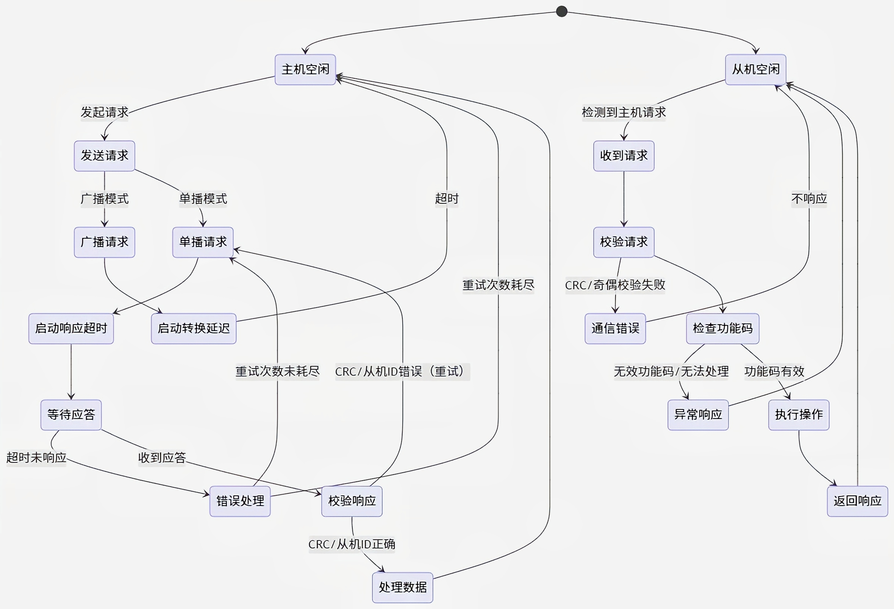
4.6 运动学算法
4.6.1 公式转换
轮胎半径 → 轮胎周长：其中 C 为周长，r 为轮胎半径。
电机转速 → 线速度：其中 v为线速度（m/s），ω 为角速度（rad/s），N为电机转速（r/min），r为轮胎半径（m）。
线速度 → 电机转速：由线速度 v（m/s）反推电机转速 N（r/min）。
速度反馈单位转换（r/min → p/s）：其中 f为脉冲频率（pulses/min, p/s），N为转速（r/min），P为每转脉冲数。 假设编码器每转产生 P个脉冲：
角度 → 弧度：其中 θd为角度，θr为弧度。
4.6.2 差速运动学模型
在相邻时刻，机器人底盘的位姿变化可以通过圆弧运动模型进行描述。设θ1表示底盘绕瞬时转动中心转过的圆弧角，θ3代表机器人航向角的变化量。该运动模型中，l为左右驱动轮的轮距，d表示右轮相对于左轮多行驶的弧长距离，r为底盘运动的瞬时转弯半径。左右轮的线速度分别记为vr和vl，ω表示底盘绕转动中心的角速度。
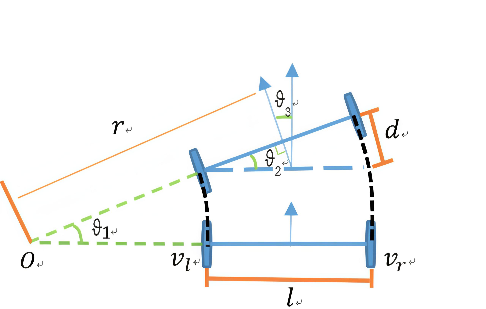
不考虑轮子打滑，左右轮的线速度近似等于其轨迹的圆周运动线速度:
基于相邻时刻机器人位姿的几何关系分析，可建立航向角变化量θ1的计算模型。如图所示，将两个时刻的机器人位姿进行空间叠加后，通过几何推导可得航向角变化量θ3满足以下关系式： 从运动学角度可以证明，机器人底盘航向角的变化量与其绕运动轨迹圆心的旋转角度保持严格一致。这一结论可通过圆周运动实验验证：当机器人沿圆形轨迹运行一周返回起点时，其航向角累计变化360°，同时绕圆心旋转的角度同样为360°，两者完全吻合。在三个关键角度参数中，θ2的计算最为简便。考虑到相邻采样时刻的时间间隔Δt极短，此时航向角变化量θ2趋近于无穷小量，因此可建立如下线性近似关系式： 所以可以得到机器人绕圆心运动的角速度ω,它也是机器人航向角变化的速度:
其中：l 是机器人底盘的轴距（即两对轮子之间的距离),vl和vr 分别是左轮和右轮的线速度。
4.6.3 阿克曼运动学模型
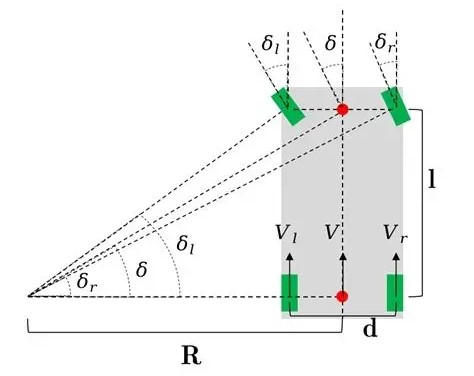
阿克曼转向几何关系：
- 所有车轮的轴线交于同一瞬时转动中心（ICR）
- 内侧轮转向角大于外侧轮转向角
- 车辆绕ICR做圆周运动
运动学方程：
- 转向几何约束：
其中：
- $\tan(\delta)$：前轮平均转向角
- L：轴距（前后轴距离）
R：转弯半径
航向角变化率：
- ω：车辆绕ICR旋转的角速度（也是航向角变化率）
v：车辆质心线速度
前轮线速度：
后轮线速度：
内外轮速度差由转向梯形机构自动保证
位姿更新方程： 在短时间间隔⋅Δt内，航向角变化量：
总结：阿克曼车和差速车区别
- 差速驱动：通过左右轮速差直接控制角速度
- 阿克曼转向：通过前轮转向角δ控制角速度，速度V独立控制
5 软件代码教程
5.1 RT_Thread系统初始化
首先在main.c的主函数中调用 rt_hw_interrupt_disable()函数禁用所有中断，确保系统初始化过程不会被中断打断，接着调用rtthread_startup()函数开始RT-Thread的启动流程。
int main(void)
{
/* 首先关闭中断，确保初始化过程不被中断 */
rt_hw_interrupt_disable();
/* 启动RT-Thread RTOS */
rtthread_startup();
}
RT-Thread实时操作系统的启动流程。
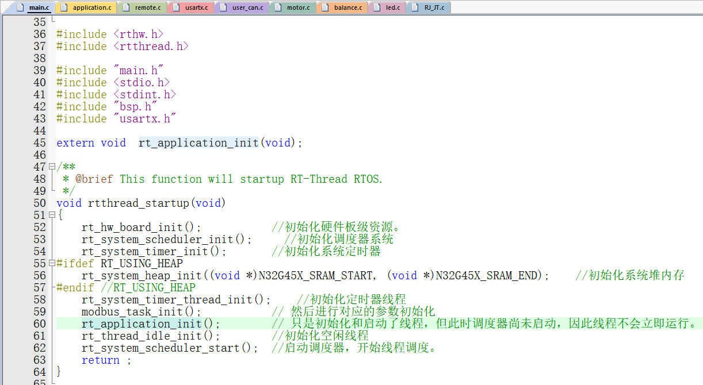
5.2 硬件初始化
5.2.1 UART5初始化（航模）
UART5初始化函数，作为航模信号接收，进行机器人底盘的控制。 在usartx.c中对其参数配置为：100k波特率，8位数据位，2位停止位，偶校验（EVEN)，无控流，25个字节。
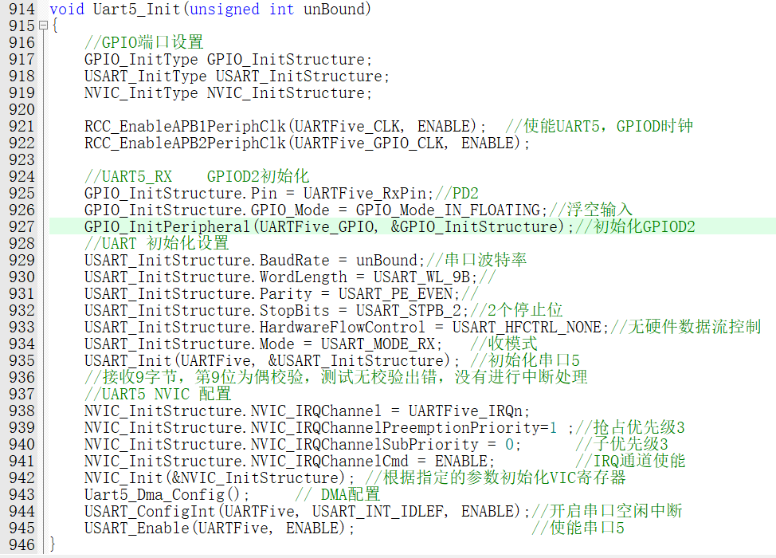
5.2.2 USART3初始化（串口助手）
为了拓展实现上位机对机器人底盘的控制以及反馈机器人信息，项目通过usart3实现这一功能。同时为了不占用CPU资源，使用了DMA转运的方式。
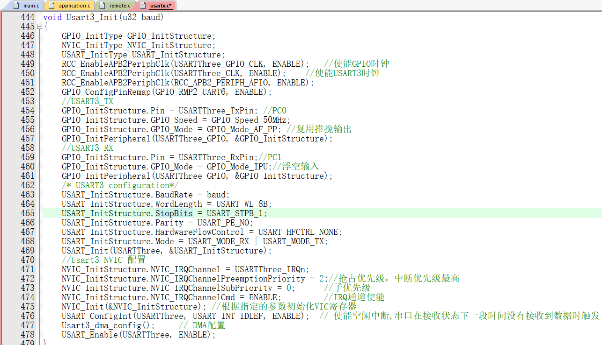
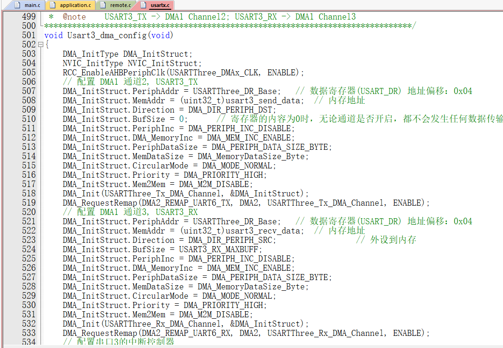
5.2.3 CAN初始化
本系统采用 CANopen 协议 实现机器人底盘的运动控制，该协议构建于 CAN 总线 物理层之上，通过标准化的通信机制完成对驱动电机的精准控制。在user_can.c中，首先对CAN1控制器进行初始化，包括GPIO、过滤器、CAN寄存器等初始化。
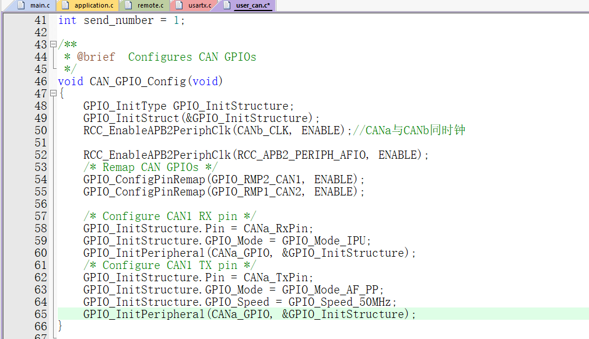
can.h
#define CAN_STD_ID_H_MASK_DONT_CARE 0x0000
#define CAN_STD_ID_L_MASK_DONT_CARE 0x0000
为了可以接受任何ID的消息，需要将上面这两个宏定义了CAN过滤器的掩码值设置为0x0000，在ID/掩码过滤模式下，这表示对应位的值在过滤时将被完全忽略。
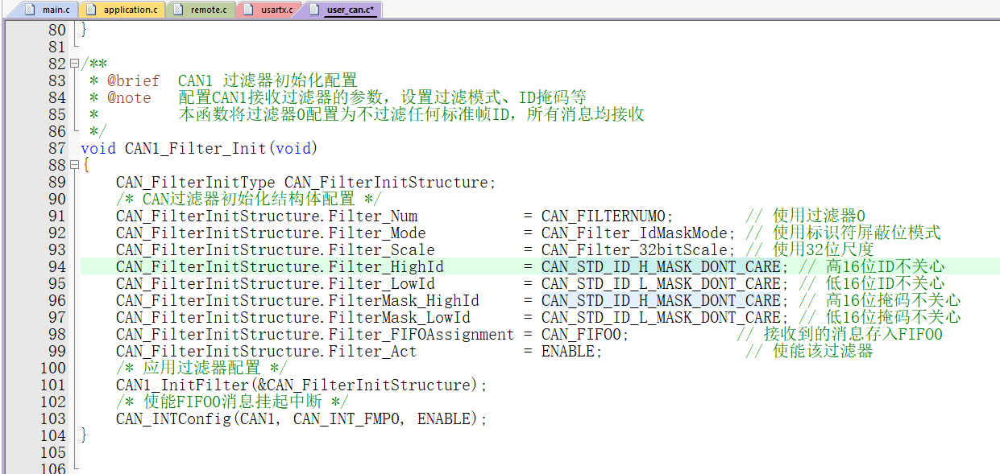
CAN的波特率通常配置为1M，这可由参数baud决定。
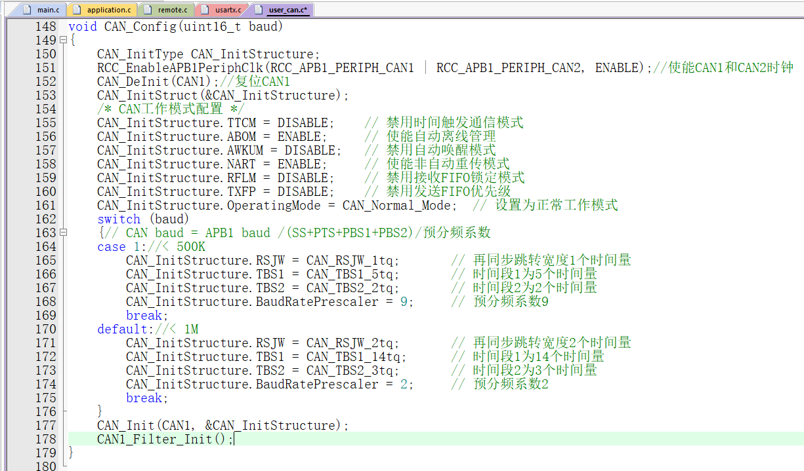
5.2.4 电机初始化
电机初始化需遵循CANopen协议状态机流程： ① 通过NMT命令设置预操作状态 ② 动态配置PDO通信参数（COB-ID、传输模式、映射条目） ③ 发送NMT启动报文（0x01）切换至操作状态
/**********************************************************
* 函数功能： 电机初始化。
* 参数： ID为从机地址。
* 说明： 无。
**********************************************************/
void Motor_Init(int count)
{
//兼容电机掉线重启功能
uint16_t i_start = (count == pdu[motor_number]) ? 0 : count;
uint16_t i_end = (count == pdu[motor_number]) ? pdu[motor_number] : (count + 1);
uint16_t mode, id,
type,//驱动器型号
ah, //加速时间高位
al, //加速时间低位
dh, //减速时间高位
dl; //减速时间低位
for (int i = i_start; i < i_end; i++)
{
//初始化MOTOR参数
type = pdu[motor1_type + i * pdu[ro_motor_gap]];
mode = pdu[motor1_sport_mode + i * pdu[ro_motor_gap]];
id = pdu[motor1_CAN_id + i * pdu[rw_motor_gap]];
ah = (pdu[motor1_acceleration_time + i * pdu[rw_motor_gap]] >> 8) & 0x00FF;
al = pdu[motor1_acceleration_time + i * pdu[rw_motor_gap]] & 0x00FF;
dh = (pdu[motor1_deceleration_time + i * pdu[rw_motor_gap]] >> 8) & 0x00FF;
dl = pdu[motor1_deceleration_time + i * pdu[rw_motor_gap]] & 0x00FF;
switch(type)
{
//单片机为主站，驱动器为从站。
case servo_zlac:
ZLAC8015_PDO_Config(id, mode, ah, al, dh, dl);//电机PDO配置
Driver_JT_Inv(id); //反转电平
NMT_Control(Start_Command, id); //启动命令
break;
case servo_wanze:
NMT_Control(0x80, id); //启动命令
WANZER_PDO_Config(id, mode);
NMT_Control(Start_Command, id); //启动命令
break;
case servo_zlacd:
ZLAC8015D_PDO_Config(id, mode, ah, al, dh, dl);
NMT_Control(Start_Command, id); //启动命令
break;
case servo_plan:
PLAN_PDO_Config(id, mode, ah, al, dh, dl);
NMT_Control(Start_Command, id); //启动命令
break;
default:
break;
}
}
}
- 节点状态设置
/**********************************************************
* 函数功能： NMT节点状态设置，对节点使能、状态切换。
* 参数： ID代表节点地址；data0为功能选择，data1为节点地址。
* 说明： 激活驱动PDO传输
**********************************************************/
void NMT_Control(const uint8_t Data0, const uint8_t ID)
{
struct SdoFrame* new_sdo_frame;
new_sdo_frame = SdoFrameCreate();
if (new_sdo_frame != NULL){
new_sdo_frame->ID = 0x000;
new_sdo_frame->mode = 1;
new_sdo_frame->data[0] = Data0;
new_sdo_frame->data[1] = ID;
}
}
- PDO参数配置
uint8_t Init_sdo[][8]={ //主站(单片机)，恢复从站的初始值
// 读参数映射（TPDO0）
{0x23,0x00,0x18,0x01,v[0],0x01,0x00,0x80}, //失能Tpdo0
{0x2B,0x00,0x18,0x05,v[2],0x00,0x00,0x00}, //定时器触发时间 20/50ms(刷新率为50/20Hz)
{0x2F,0x00,0x1A,0x00,0x00,0x00,0x00,0x00}, //清除映射
{0x23,0x00,0x1A,0x01,0x10,0x00,0x41,0x60}, //6041 状态字
{0x23,0x00,0x1A,0x02,0x20,0x00,0x6C,0x60}, //606C 速度反馈
{0x23,0x00,0x1A,0x03,0x10,0x00,0x77,0x60}, //6077 实际转矩
{0x23,0x00,0x18,0x01,v[0],0x01,0x00,0x00}, //设置PDO的COB-ID
{0x2F,0x00,0x18,0x02,0xFF,0x00,0x00,0x00}, //定时器触发
{0x2F,0x00,0x1A,0x00,0x03,0x00,0x00,0x00}, //映射对象子索引个数
// 读参数映射（TPDO1）
{0x23,0x01,0x18,0x01,v[0],0x02,0x00,0x80}, //失能Tpdo1
{0x2B,0x01,0x18,0x05,v[2],0x00,0x00,0x00}, //定时器触发时间 50ms(刷新率为20Hz)
{0x2F,0x01,0x1A,0x00,0x00,0x00,0x00,0x00}, //清除映射
{0x23,0x01,0x1A,0x01,0x10,0x00,0x41,0x60}, //6041 状态字
{0x23,0x01,0x1A,0x02,0x10,0x00,0x3F,0x60}, //603F 错误代码
{0x23,0x01,0x1A,0x03,0x20,0x01,0x03,0x10}, //1003 故障信息
{0x23,0x01,0x18,0x01,v[0],0x02,0x00,0x00}, //设置PDO的COB-ID
{0x2F,0x01,0x18,0x02,0xFF,0x00,0x00,0x00}, //定时器触发
{0x2F,0x01,0x1A,0x00,0x03,0x00,0x00,0x00}, //映射对象子索引个数
// 写参数映射（RPDO0）
{0x23,0x00,0x14,0x01,v[1],0x02,0x00,0x80}, //失能Rpdo0
{0x2F,0x00,0x14,0x02,0xFE,0x00,0x00,0x00}, //②Hex1400_02，传输形式：0xFE：事件触发；0xFF：定时器触发
{0x2F,0x00,0x16,0x00,0x00,0x00,0x00,0x00}, //清除映射
{0x23,0x00,0x16,0x01,0x10,0x00,0x40,0x60}, //6040 控制字
{0x23,0x00,0x16,0x02,0x20,0x00,v[3],0x60}, //60FF/7A 速度、位置模式
{0x2F,0x00,0x16,0x00,0x02,0x00,0x00,0x00}, //映射对象子索引个数
{0x23,0x00,0x14,0x01,v[1],0x02,0x00,0x00}, // 设置PDO的COB-ID
};
Add_Sdo_Linked_List(id, Init_sdo, sizeof(Init_sdo)/sizeof(Init_sdo[0]));//添加到发送链表中
5.3 应用层
5.3.1 核心控制(balance.c)
核心控制任务创建
rt-thread轮询任务，每5ms获取一次上位机或者控制航模的遥控器
/**************************************************************************
函数功能：核心控制相关
入口参数：
返回 值：
**************************************************************************/
//uint8_t tmp1 = 0;
rt_tick_t elapsed_time= 1;
void Balance_task(void* pvParameters)
{
while (1)
{
rt_thread_delay(500); //< 50ms
SetReal_Velocity(); //获取到设定的速度和方向值
// 阿克曼 有三个电机 ，只有前轮一个电机转向，位置模式， 其它电机 全部速度模式
Kinematic_Analysis(pdu[target_linear_speed], Move_Y, pdu[target_yaw_speed]);//将线速度和角速度转化为电机的输入值
// 用于解决电机 编号的问题， 通过 判断2号电机的模式(), 最大的原因 圆盘的驱动器 是一拖二，其它都 是一拖一
uint16_t x_sport_mode = (pdu[car_type] == Diff_Car) ? pdu[motor1_sport_mode] : pdu[motor2_sport_mode];
//目前最有效的结果，就是解决了 中凌电机的 电流限制问题
ClassificationOfMotorMotionModes(x_sport_mode); //电机运动模式分类
}
}
各控制模式设置电机速度
X 轴：代表前进/后退的线速度（控制机器人往前或往后移动）
Z 轴：代表绕垂直轴（Z轴）的旋转角速度，也就是 “偏航（Yaw）”，即控制机器人左转或右转（转向）
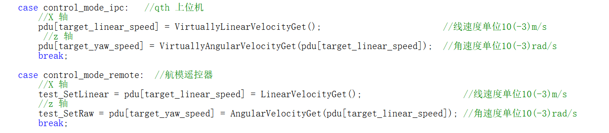
遥控器控制下的线速度设置，上位机控制同理。
VelocityCoefficient：速度档位
VelocityTemp：前进方向*通道值-基础值/拨杆半量程
switch中无论哪个车的类型都返回(VelocityCoefficient * VelocityTemp)
// 输入对应遥控器的通道值
short LinearVelocityGet(void){
uint16_t VelocityCoefficient = (myabs(pdu[GearPosition_value] - pdu[rc_min_value]) < CHANNEL_VALUE_ERROR) ? pdu[linear_low] : (myabs(pdu[GearPosition_value] - pdu[rc_base_value]) < CHANNEL_VALUE_ERROR) ? pdu[linear_middle] : pdu[linear_high];
float VelocityTemp = pdu[robot_forward_direction] * (pdu[Forward_value] - pdu[rc_base_value]) / (float)pdu[rc_gears_difference];
switch(pdu[car_type]){
case Akm_Car: // 阿克曼
case FourWheel_Car: // 室外差速四驱车
case Diff_Car: // 差速车(圆形底盘)
case TwoWheel_Car: // 室内差速二驱车
case Tank_Car: // 坦克车
case RC_Car: // RC车
return (myabs(pdu[Enable_value] - pdu[rc_max_value]) < CHANNEL_VALUE_ERROR) ?//使能拨杆
(short)(VelocityCoefficient * VelocityTemp) : 0;
default:
return 0;
}
}
遥控器控制下的角速度设置，上位机控制同理。
阿克曼车需要根据线速度的值来调整他的Z轴角度的值
而差速车的不需要根据线速度的值进行调整角速度的值
调整放大系数就能调整转向的快慢，角速度越大，也灵敏。反之。
// 输入对应遥控器的通道值
short AngularVelocityGet(short linearValue){
uint16_t YawCoefficient = (pdu[GearPosition_value] == pdu[rc_min_value]) ? pdu[angular_low] : //角速度系数
(pdu[GearPosition_value] == pdu[rc_base_value]) ? pdu[angular_middle] : pdu[angular_high];
float YawTemp = (pdu[robot_forward_direction] * (pdu[Turn_value] - pdu[rc_base_value]) / (float)pdu[rc_gears_difference]); //角速度与转向通道值正方向相反，归一法(-1,1)
switch(pdu[car_type])
{
case Akm_Car: // 阿克曼
pdu[target_angle] = round(YawTemp * DEGREE_MAX); //前轮转角
Servo_pulse = YawTemp * MYHALF * ENCODER_LINES * CORRECTION_FACTOR * pdu[motor1_reduction_ratio];//脉冲
return (myabs(pdu[Enable_value] - pdu[rc_max_value]) < CHANNEL_VALUE_ERROR) ?
(short)(linearValue * YawTemp / AKM_RAW_FACTOR) : 0; // Z轴角速度
case Diff_Car: // 差速车(圆形底盘)
case FourWheel_Car: // 室外差速四驱车
case TwoWheel_Car: // 室内差速二驱车
case Tank_Car : // 坦克车
return (myabs(pdu[Enable_value] - pdu[rc_max_value]) < CHANNEL_VALUE_ERROR) ?
(short)(YawCoefficient * YawTemp / PI * 4) : 0; // Z轴角速度
default:
return 0;
}
}
5.3.2 解析数据(remote.c)
1、数据解析任务创建
主要负责接收和处理来自不同源的控制指令，并管理电机的使能状态。
/**************************************************************************
函数功能：ROS--Usart3 、手柄控制--Usart5相关
入口参数：
返回 值：
**************************************************************************/
void Remote_Task(void *pvParameters)
{
while (1)
{
rt_thread_delay(TIM);
Usart3_Recv(); //串口3(ROS)接收数据
Soft_JT_Flag = SWD_JT_Control();
Usart3_Send(); //串口3(ROS)发送数据
Sbus_Data_Parsing(); //解析航模数据
MotorEnableFunction(); //电机使能 0 -6 -7 -15 控制字的切换
}
}
2、航模解析
获取通道值，这里用的是SBUS协议，参考网址：https://os.mbed.com/users/Digixx/notebook/futaba-s-bus-controlled-by-mbed/
阶段一：遥控器 → 接收机（通过无线电）
- 摇杆/开关数据采集：遥控器内部的MCU不断扫描所有摇杆、旋钮和开关的位置，将它们转换为数字值。例如，每个通道通常是一个16位的数值（范围约在1000~2000us，中位1500）。
- 数据打包：遥控器将这些所有通道的数据、以及校验和等信息，按照其自家的无线协议
- 调制与发射：射频模块将这个数据帧调制成2.4GHz的无线电信号，并通过天线广播出去。
阶段二：接收机 → MCU（通过SBUS线）
- 接收与解调：与遥控器配对的接收机，其射频模块接收到无线电信号，将其解调还原成原始的数据帧。
- 解析与转换：接收机的主控MCU解析这个数据帧，提取出各个通道的数值。
- SBUS封装：这是最关键的一步。接收机将提取出的通道数据，按照SBUS协议重新打包。
上面的了解就行，买了套件不用想遥控器和接收机的通信。主要接收机接收机和MCU的通信，解析接收机收到的通道数据，不同刷新数组的值，使用的时候就调用数组的值进行判断
/**************************************************
* 函数功能：将sbus信号转换为通道值
* 参 数：Uart5_Buffer为接收到的串口数据
* 返 回 值：无
**************************************************/
void Sbus_Data_Parsing(void)
{
//这里用的是SBUS协议，参考网址：https://os.mbed.com/users/Digixx/notebook/futaba-s-bus-controlled-by-mbed/
/*SBUS共25个字节，14ms发送一次，发送帧包括1个起始位+8位数据位+1个偶校验+2个停止位。
用DMA到Uart5_Buffer只保存25个8位数据位
第2个字节~第23个字节为对应16个通道，每个通道11bit。22*8=16*11，每个通道取值范围为0~2^11-1=0-2047，本款取值240-1807。
高位先发，ch1的11位=data2的低3位+data1的8位，依此类推。第24个字节为状态字flag，0代表所有数据正确，1代表失败。
*/
// 如果当前使用的是FS-i6型号的遥控器
#if(REMOTE_TYPE == REMOTE_TYPE_FSi6)
// 遥控器计数器：用于检测遥控器是否失去连接
// 当计数器小于100秒（假设DELAY_COUNT_1S是1秒的计数单位）时增加计数器
if(REMOTE_Count < DELAY_COUNT_1S * 100)
{
REMOTE_Count++;
}
#endif
// 当SBUS数据解析标志被置位（表示有新的遥控器数据需要处理）
if (Sbus_Data_Parsing_Flag)
{
// 清除数据解析标志，等待下一次数据
Sbus_Data_Parsing_Flag = false;
//0起始字节为0F，23标志正常为00，24结束字节00
//FS-i6S遥控器最多只支持到前10个通道
// //HT-8A遥控器最多支持8通道
//Uart5_Buffer[23]理论正常应该为00，但HT-8A显示03
if (Uart5_Buffer[0] == 0x0F && Uart5_Buffer[24] == 0x00)
{
// 解析16个通道的数据（每个通道11位数据，0x07FF是11位的掩码）
// 通道1：组合字节1和字节2的数据
pdu[rc_ch1_value] = ((int16_t)Uart5_Buffer[1] >> 0 | ((int16_t)Uart5_Buffer[2] << 8)) & 0x07FF;
pdu[rc_ch2_value] = ((int16_t)Uart5_Buffer[2] >> 3 | ((int16_t)Uart5_Buffer[3] << 5)) & 0x07FF;
pdu[rc_ch3_value] = ((int16_t)Uart5_Buffer[3] >> 6 | ((int16_t)Uart5_Buffer[4] << 2) | (int16_t)Uart5_Buffer[5] << 10) & 0x07FF;
pdu[rc_ch4_value] = ((int16_t)Uart5_Buffer[5] >> 1 | ((int16_t)Uart5_Buffer[6] << 7)) & 0x07FF;
pdu[rc_ch5_value] = ((int16_t)Uart5_Buffer[6] >> 4 | ((int16_t)Uart5_Buffer[7] << 4)) & 0x07FF;
pdu[rc_ch6_value] = ((int16_t)Uart5_Buffer[7] >> 7 | ((int16_t)Uart5_Buffer[8] << 1) | (int16_t)Uart5_Buffer[9] << 9) & 0x07FF;
pdu[rc_ch7_value] = ((int16_t)Uart5_Buffer[9] >> 2 | ((int16_t)Uart5_Buffer[10] << 6)) & 0x07FF;
pdu[rc_ch8_value] = ((int16_t)Uart5_Buffer[10] >> 5 | ((int16_t)Uart5_Buffer[11] << 3)) & 0x07FF;
pdu[rc_ch9_value] = ((int16_t)Uart5_Buffer[12] << 0 | ((int16_t)Uart5_Buffer[13] << 8)) & 0x07FF;
pdu[rc_ch10_value] = ((int16_t)Uart5_Buffer[13] >> 3 | ((int16_t)Uart5_Buffer[14] << 5)) & 0x07FF;
pdu[rc_ch11_value] = ((int16_t)Uart5_Buffer[14] >> 6 | ((int16_t)Uart5_Buffer[15] << 2) | (int16_t)Uart5_Buffer[16] << 10) & 0x07FF;
pdu[rc_ch12_value] = ((int16_t)Uart5_Buffer[16] >> 1 | ((int16_t)Uart5_Buffer[17] << 7)) & 0x07FF;
pdu[rc_ch13_value] = ((int16_t)Uart5_Buffer[17] >> 4 | ((int16_t)Uart5_Buffer[18] << 4)) & 0x07FF;
pdu[rc_ch14_value] = ((int16_t)Uart5_Buffer[18] >> 7 | ((int16_t)Uart5_Buffer[19] << 1) | (int16_t)Uart5_Buffer[20] << 9) & 0x07FF;
pdu[rc_ch15_value] = ((int16_t)Uart5_Buffer[20] >> 2 | ((int16_t)Uart5_Buffer[21] << 6)) & 0x07FF;
pdu[rc_ch16_value] = ((int16_t)Uart5_Buffer[21] >> 5 | ((int16_t)Uart5_Buffer[22] << 3)) & 0x07FF;
}
3、控制切换
当航模通信超时（>5秒）时，系统控制权将自动移交至预设的备用控制模式，确保系统持续稳定运行。
把使能和急停同时拨到最小的位置，3s后ROS接管系统。当取消ROS接管的时候，使能和急停随便那个就可以
//该遥控器的接收端未接收到信号时一直发待机状态，故只有remote和ros两种控制模式
//遥控器默认状态
// 检查遥控器是否处于默认状态（所有通道在中间位置，使能通道为最小值，急停通道为最小值）
if ( pdu[Enable_value] == pdu[rc_min_value] && pdu[EmergencyStop_value] == pdu[rc_min_value])
{
//三秒默认状态视为失去遥控器控制
if (REMOTE_Count > (DELAY_COUNT_1S * 2))
{
pdu[control_mode] = control_mode_ros; // 切换到ROS控制模式
pdu[rc_connect_state] = rc_state_failed; // 标记遥控器连接失败
}
// 如果计数器小于100秒，增加计数器
else if (REMOTE_Count < (DELAY_COUNT_1S * 100))
{
REMOTE_Count++;
}
}
else
{
pdu[control_mode] = control_mode_remote; // 设置为遥控器控制模式
pdu[rc_connect_state] = rc_state_success; // 标记遥控器连接成功
REMOTE_Count = 0; // 重置遥控器超时计数器
}
4、接收ROS上位机数据
开启DMA通道接收来自ROS上位机发送的控制数据，并将数据存在Receive_Data[]。只要接收到数据，控制权转给ROS。
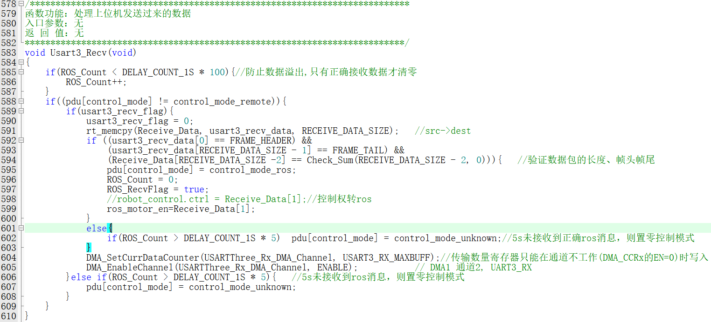
5、电机使能
根据状态字判断电机的状态。
使用航模通道7 和 物理按键实现急停
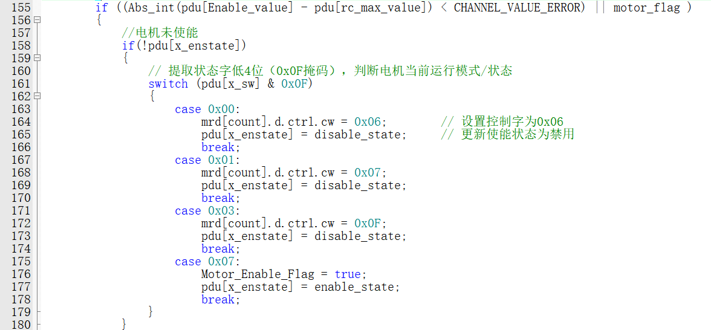
5.3.3 电机刷新任务(motor.c)
- 创建电机刷新任务
用于获取电机状态，接收从电机上传的反馈数据（如状态字、控制字等）；
这些数据通常通过 PDO（过程数据对象） 协议传输；
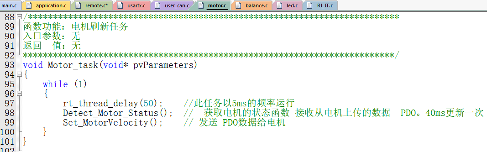
- 获取电机反馈的信息
解析CAN总线上的TPDO报文，提取电机运行状态信息，如脉冲频率、力矩、错误代码和故障信息等。
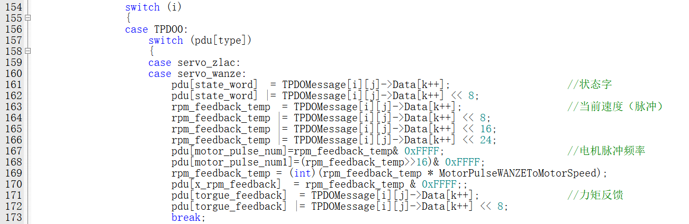
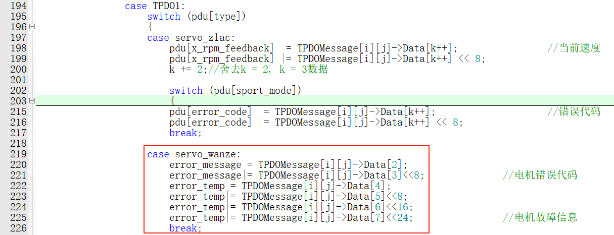
5.3.4 CAN任务(user_can.c)
- 创建CAN_PDO任务
用于周期性的发送PDO和SDO数据。
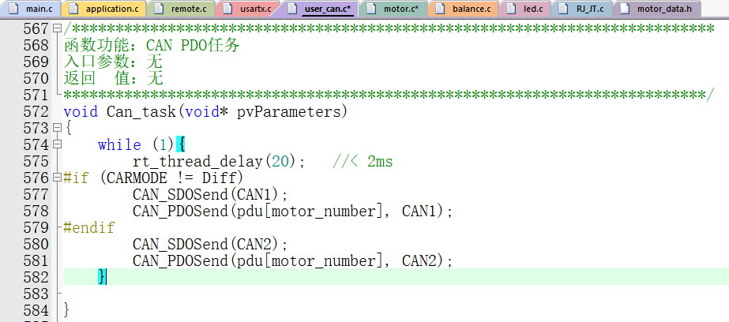
- 发送SDO数据
从预先配置的SDO数据链表中提取待发送数据（该链表已在motor.c文件的WANZER_PDO_Config()函数中初始化），将其封装为CAN报文格式，并通过指定的CAN通信模块发送。主要的作用是映射
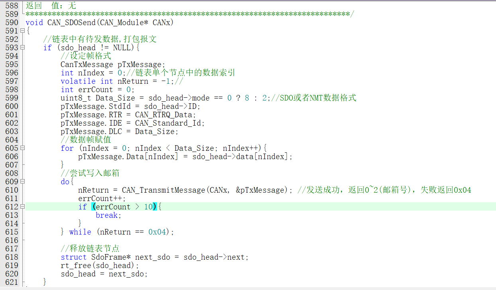
- 发送PDO数据(
CAN_PDOSend())
负责将电机控制命令实时发送给各个伺服驱动器，这里主要发送的是电机的目标速度，用于控制机器人底盘的运动。
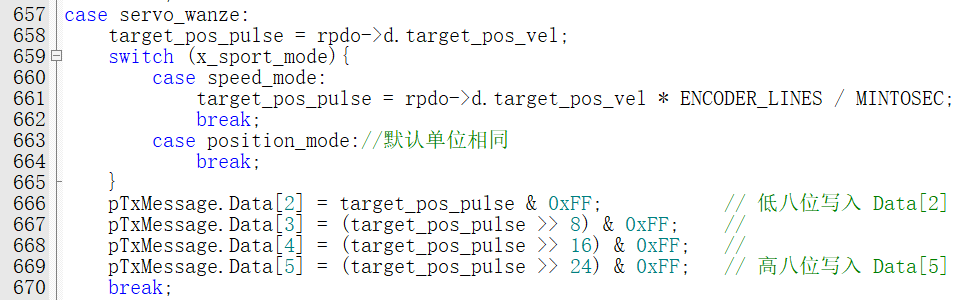
5.2.5 流程总结
总体概念就是解析航模的通道数据解析-Remote_task()（包括急停、ROS接管、机器使能、速度比的选择），在RT-theard的管理下实时监测他的数据，通过can总线的CANopen协议发送给电机-Balance_task()，电机也会返回温度等参数的反馈数据
6 运动学算法代码教程
6.1 公式转换
//公式转换
void InitMotorParameters(void)
{
//轮胎半径->轮胎周长, 单位：m 公式：C=2 * PI * R
TireCircumference = 2 * PI * pdu[wheel_radius] * MAGNIFIC_10000x_DOWN;
//电机转速->线速度, 单位：m/s 公式： C / REDUCTION_RATE / 60
MotorSpeedToLineSpeed = TireCircumference / pdu[motor1_reduction_ratio] / MINTOSEC;
//线速度->电机转速, 单位：r/min 公式： REDUCTION_RATE * 60 / C
LineSpeedToMotorSpeed = 1 / MotorSpeedToLineSpeed;
//速度反馈单位转换0.1r/min->p/s(ZLAC), 公式： 0.1 / 60 * ENCODER_LINES
MotorSpeedZLACToPulse = MAGNIFIC_10x_DOWN / MINTOSEC * ENCODER_LINES;
//速度反馈单位转换p/s->0.1r/min(WANZE), 单位：r/min 公式： REDUCTION_RATE * 60 / C
MotorPulseWANZEToMotorSpeed = 1 / MotorSpeedZLACToPulse;
//角度最大值->弧度最大值，单位：0.1 degree -> radian
Z_Radian_Max = pdu[max_angle] * MAGNIFIC_10x_DOWN * ANGtoRAD;
}
6.2 运动学模型代码
速度转换
根据选择车辆类型，可以不同的电机反馈，从而可以计算出角速度的值
线速度换算
switch (pdu[car_type])
{
case Akm_Car:
mpl1 = pdu[motor2_position1_feedback];
mpl2 = pdu[motor2_position2_feedback];
mpr1 = pdu[motor3_position1_feedback];
mpr2 = pdu[motor3_position2_feedback];
msl = pdu[motor2_rpm_feedback];
msr = pdu[motor3_rpm_feedback];
break;
case FourWheel_Car:
mpl1 = pdu[motor2_position1_feedback];
mpl2 = pdu[motor2_position2_feedback];
mpr1 = pdu[motor3_position1_feedback];
mpr2 = pdu[motor3_position2_feedback];
msl = pdu[motor2_rpm_feedback];
msr = pdu[motor3_rpm_feedback];
break;
case Diff_Car:
case TwoWheel_Car:
case Tank_Car:
mpl1 = pdu[motor1_position1_feedback]; //无电机位置反馈
mpl2 = pdu[motor1_position2_feedback];
mpr1 = pdu[motor2_position1_feedback];
mpr2 = pdu[motor2_position2_feedback];
msl = pdu[motor1_rpm_feedback];
msr = pdu[motor2_rpm_feedback];
break;
}
角速度换算
//pdu[yaw_speed_feedback] w = r * (wr + wl) / H。 H为轮距，r为车轮半径,1 rpm = 2pi/60 rad/s
yaw_speed_feedbacktmp= -(short)((float)(pdu[wheel_radius] * (msl + msr) * MAGNIFIC_10x_DOWN * PI /30 * MAGNIFIC_1000x_UP) / (float)pdu[car_tread] );
7 上位机控制示例
连接：PC连接RS232收发器，RS232收发器连接控制板的RS232接口，使用：串口助手发送相应字节的数据
上位机下发数据帧格式
| 字段名 | 字节位置 | 值范围 | 描述说明 | 数据格式 |
|---|---|---|---|---|
| 帧头 | 0 | 0x7B | 帧起始标志 | 固定值 |
| 电机使能 | 1 | 0-2 | 0:保持, 1:使能, 2:失能 | u8 |
| 禁止运行命令 | 2 | 0-2 | 0:保持, 1:开启禁止, 2:关闭禁止 | u8 |
| 车灯控制 | 3 | 0-1 | 0:灭, 1:亮 | u8 |
| 机器人底盘x轴速度低8位 | 4 | 0-255 | x轴速度低字节 (10^-3m/s) | 小端格式 |
| 机器人底盘x轴速度高8位 | 5 | 0-255 | x轴速度高字节 | 小端格式 |
| 机器人底盘y轴速度低8位 | 6 | 0-255 | y轴速度低字节 (10^-3m/s) | 小端格式 |
| 机器人底盘y轴速度高8位 | 7 | 0-255 | y轴速度高字节 | 小端格式 |
| 机器人底盘z轴速度低8位 | 8 | 0-255 | z轴角速度低字节 (10^-3rad/s) | 小端格式 |
| 机器人底盘z轴速度高8位 | 9 | 0-255 | z轴角速度高字节 | 小端格式 |
| 超声波开关指令 | 10 | 0-2 | 0:保持, 1:开启, 2:关闭 | u8 |
| 充电通电开关指令 | 11 | 0-2 | 0:保持, 1:开启, 2:关闭 | u8 |
| 雷达开关指令 | 12 | 0-2 | 0:保持, 1:开启, 2:关闭 | u8 |
| 预留1 | 13 | - | 保留扩展位 | - |
| 预留2 | 14 | - | 保留扩展位 | - |
| 校验码 | 15 | 0-255 | 字节0-14异或校验值 | XOR(0-14) |
| 帧尾 | 16 | 0x7D | 帧结束标志 | 固定值 |
示例：
| 指令功能 | 指令数据（十六进制） |
|---|---|
| 前进 | 7B 01 00 00 10 00 00 00 00 00 00 00 00 00 00 6A 7D |
| 开启禁止 | 7B 01 01 00 00 00 00 00 00 00 00 00 00 00 00 7B 7D |
| 开灯 | 7B 01 00 01 00 00 00 00 00 00 00 00 00 00 00 7B 7D |
| 关灯 | 7B 01 00 00 00 00 00 00 00 00 00 00 00 00 00 7A 7D |
8 拓展功能
8.1 设备急停
急停任务：轮询检测物理按键和航模的急停开关
/**************************************************************************
函数功能：SWD软件急停功能
入口参数：无
返回 值：无
**************************************************************************/
void RJJT_task(void *pvParameters)
{
while(1)
{
rt_thread_delay(20);//此任务以2ms的频率运行
Soft_JT_Flag = SWD_JT_Control();
}
}
/**************************************************************************
函数功能：根据SWD控制软件急停
入口参数：无
返回 值：无
**************************************************************************/
bool soft_emergency_stop = false;
bool SWD_JT_Control(void)
{
if(Abs_int(pdu[EmergencyStop_value] - pdu[rc_max_value]) < CHANNEL_VALUE_ERROR){
// ABS 急停开关
soft_emergency_stop = true;
}
else{
soft_emergency_stop = false;
}
if(ROS_JT_Flag) {
ROS_JT_Flag = false;
// 上位机急停
if(Receive_Data[2] == 1)
{
soft_emergency_stop = true;
}
else if(Receive_Data[2] == 2)
{
soft_emergency_stop = false;
}
}
return soft_emergency_stop;
}
在balance.c中判断急停标志 是否为Ture，将速度的值赋值为0.
if (Soft_JT_Flag) //< 急停
{
pdu[target_linear_speed] = Move_Y = pdu[target_yaw_speed] =pdu[target_angle] = Servo_pulse = 0;
}
8.2 转向车灯
LED任务，根据急停和转向的状态进行相应的灯。
/**************************************************************************
函数功能：LED灯任务
入口参数：无
返回 值：无
**************************************************************************/
void Led_task(void *pvParameters)
{
while(1){
rt_thread_delay(200); //< 20ms
JT_Light();
Car_Light();
}
}
选择车的状态，调用SetLEDs() 就能设置左灯和右灯
static uint8_t blinkState = 0; // 闪烁状态
static uint8_t blinkCounter = 0; // 闪烁计数器
/**************************************************************************
函数功能：左右灯引脚设置
入口参数：无
返回 值：无
**************************************************************************/
void SetLEDs(bool left, bool right)
{
GPIO_WriteBit(MCU_LED_LEFT_GPIO, MCU_LED_LEFT_PIN, left);
GPIO_WriteBit(MCU_LED_RIGHT_GPIO, MCU_LED_RIGHT_PIN, right);
}
/**************************************************************************
函数功能：根据状态控制车灯
入口参数：无
返回 值：无
**************************************************************************/
void Car_Light(void)
{
#if(CARMODE != Diff)
light_time.t_cnt_LF_White ++;//用同一个计数器保证同频率。
if ( Soft_JT_Flag == 0)//急停指示灯优先级最高
{
// 每500ms（假设系统时钟为20ms/次，25*20ms=500ms）更新一次闪烁状态
if (light_time.t_cnt_LF_White >= 25)
{
light_time.t_cnt_LF_White = 0;
blinkState = !blinkState; // 切换闪烁状态
}
if ((short)pdu[target_linear_speed] > 0)
{//倒车
if (blinkState)
{
SetLEDs(true,true);
}
else
{
SetLEDs(false,false);
}
}
else if ((short)pdu[target_yaw_speed] < 0)
{//左转
if (blinkState)
{
SetLEDs(true,true);
}
else
{
SetLEDs(false,true);
}
}
else if ((short)pdu[target_yaw_speed] > 0)
{//右转
if (blinkState)
{
SetLEDs(true,true);
}
else
{
SetLEDs(true,false);
}
}
else if((short)pdu[target_linear_speed] < 0)
{
SetLEDs(true,true);
}
}
#else
light_time.t_cnt_LF_White ++;//用同一个计数器保证同频率。
if (light_time.t_cnt_LF_White >= 25 && Soft_JT_Flag == 0)//急停指示灯优先级最高
{//500ms
light_time.t_cnt_LF_White = 0;
if ((short)pdu[target_linear_speed] > 0)
{//倒车 .
LedBlink(MCU_LED_LEFT_GPIO, MCU_LED_LEFT_PIN);
LedBlink(MCU_LED_RIGHT_GPIO, MCU_LED_RIGHT_PIN);
}
else if ((short)pdu[target_yaw_speed] < 0)
{//左转
LedBlink(MCU_LED_LEFT_GPIO, MCU_LED_LEFT_PIN);
GPIO_SetBits(MCU_LED_RIGHT_GPIO, MCU_LED_RIGHT_PIN);
}
else if ((short)pdu[target_yaw_speed] > 0)
{//右转
LedBlink(MCU_LED_RIGHT_GPIO, MCU_LED_RIGHT_PIN);
GPIO_SetBits(MCU_LED_LEFT_GPIO, MCU_LED_LEFT_PIN);
}
else
{//清空指示灯，包括急停结束后的熄灯
GPIO_ResetBits(MCU_LED_LEFT_GPIO, MCU_LED_LEFT_PIN);
GPIO_ResetBits(MCU_LED_RIGHT_GPIO, MCU_LED_RIGHT_PIN);
}
}
#endif
}
9 常见问题
9.1 UART5无法接受的问题
由于串口5接收被航模接收占用，所以要使用跳线帽连接串口5的引脚（postion：引出uart5引脚旁边）
9.2 pdu数组索引在哪问题
由于代码的集成性比较高，代码比较多。pdu是一些参数的数组名称，在modbus/485_address.h中可以找到。其说明pdu地址说明书